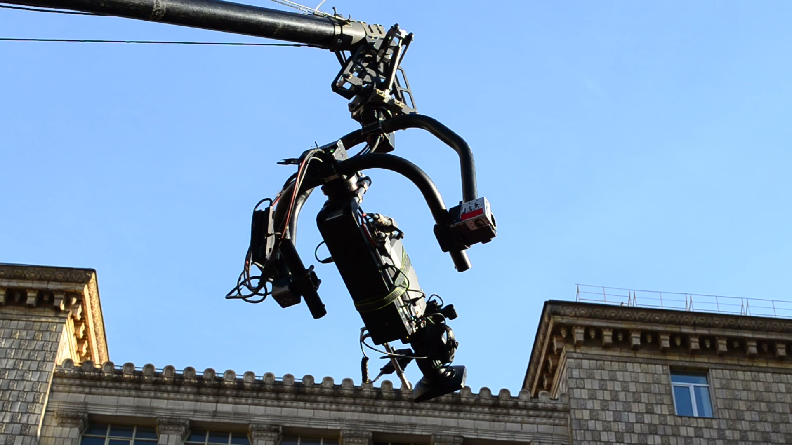

Virtual Production · Cranes & Remote Systems · Athens
The camera goes where the story needs it.
Virtual production and 34 high-end crane, dolly and remote-head systems for film, TV and commercials shooting in Greece. Tell us the shot. We'll bring the way to get it.
Two ways we move
your production.
Pick the one you came for. Most productions end up using both.
Virtual Production
Shoot any location without leaving the stage. Backgrounds render in real time and land in camera, so the director sees the final frame on set.

02Cranes & Remote Systems
From a 14-metre telescopic crane to a robotic arm that repeats a move to the millimetre. 34 systems, ready for your schedule.
Why CAT
Crazy About Technology. We keep the camera technology big productions usually fly in, ready to roll in Athens.
One call covers the rig, the stage and the people who know how to run them. You plan the shot, we handle what it takes to get it, from the first test to the last take.
The catalog
Every move,
one rental house.
- 01Telescopic cranesST10+ to ST50+ · MB45 · XJIB14 m+ telescopic length
- 02Modular cranesGF-8 · GF-9 · Jimmy Jib · Foxy · Swiss JibTool-free assembly
- 03Motion controlMRMC Bolt Jr · TechnoDolly 15+3 m/s, sub-mm repeatability
- 04DolliesAgito · AutoDolly · Furio · Slidekamera48 km/h in Sports mode
- 05Camera carMotocrane Ultra3.65 m arm, 25 kg payload
- 06Remote headsTalon · Z-Head · Cobra · Hornet · MōVI XL2,000 stored positions
- 07Cable & aerialFlyline · DynamiCam · Drones35 km/h on a cable
See it move.
Our YouTube channelA word from our CEO
We built CAT for the moment a director says “can we even do that?”. Our job is to say yes, and then make it look easy on the day.
Plan your shoot
Tell us the shot. We'll tell you how.
Share your dates and what you have in mind. A real person replies, usually the same day.
CAT · 5 Margarita & Pefkon Street
Athens, Greece